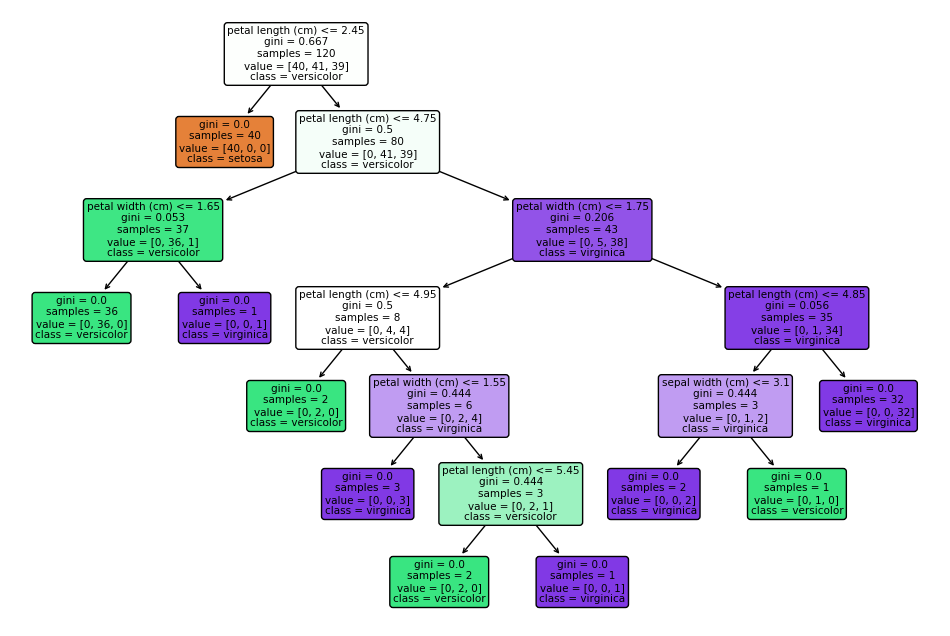

Explore the details of my machine learning project, including code snippets and results.
Embed code snippets with syntax highlighting to illustrate key points.
# Import necessary libraries
from sklearn.datasets import load_iris
from sklearn.model_selection import train_test_split
from sklearn.tree import DecisionTreeClassifier
from sklearn.metrics import accuracy_score, classification_report
import matplotlib.pyplot as plt
from sklearn.tree import plot_tree
# Load Iris dataset
iris = load_iris()
X = iris.data
y = iris.target
# Split the dataset into training and testing sets
X_train, X_test, y_train, y_test = train_test_split(X, y, test_size=0.2, random_state=42)
# Train a Decision Tree classifier
clf = DecisionTreeClassifier(random_state=42)
clf.fit(X_train, y_train)
// Make predictions on the test set
y_pred = clf.predict(X_test);
// Evaluate the model
// Note: Use alert for demonstration. In a real environment, you might use other methods to display information.
alert("Accuracy: " + (accuracy_score(y_test, y_pred)).toFixed(2));
// Display classification report
// Note: Use alert for demonstration. In a real environment, you might use other methods to display information.
alert("Classification Report:\n" + classification_report(y_test, y_pred));
// Visualize the Decision Tree and save as an image
plt.figure(figsize=(12, 8))
plot_tree(clf, feature_names=iris.feature_names, class_names=iris.target_names, filled=True, rounded=True)
plt.savefig('machine_learning_visual.png') // Save the visualization as an image
plt.close() // Close the plot to prevent it from being displayed
Include charts, graphs, or diagrams generated from your code.
